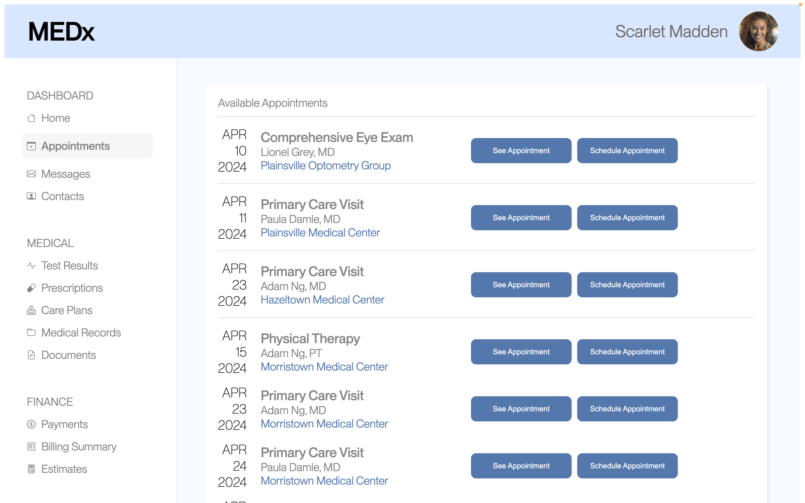

A/B Testing
Overview
The aim of this assignment was to apply statistical tests to understand whether a design decision positively influenced user interaction with the interface. I conducted a simple A/B test between two versions of a website and analyzed the collected data, including instances of misclicks, time spent on the page and mouse distance, in order to assess the effectiveness of each version.
Data Collection
The interface used for A/B testing was a medical appointment booking platform. Below are the two versions of the website. Version B includes UI changes I made, which consist of making the buttons horizontal, darker and reducing padding, adding lines between different appointment locations and changing the color of the location text.
Version A:

Version B:
During the studio session, students attempted to schedule an appointment with Adam Ng, MD at Morristown Medical Center on April 23, 2024, using both Version A and Version B. I collected data on instances of misclicks, time spent on the page, mouse distance and other metrics as they performed the task.
Hypotheses
My metric of choice is total mouse distance moved (in pixels) because if a user moved the mouse a greater distance then they were likely confused about where to click and/or what elements were clickable.
Misclick Rate
- Null Hypothesis: Version A and Version B have the same rate of misclicks.
- Alternative Hypothesis: Version A and B have different rate of misclicks.
- Reasoning: In Version A, a user has to carefully read all the details about an appointment to distinguish between them. In Version B, people are less likely to misclick because organizing the appointments by location and emphasizing the location with a different text color makes it easier to differentiate appointments with the same doctor that are on the same date.
- Prediction: I predict that I will reject the null hypothesis.
- Reasoning: I noticed that only one person misclicked in Version B, whereas seven people misclicked in Version A. Therefore, I expect the p-value to indicate that the difference in the misclick rates between Version A and Version B is statistically significant, which would lead me to reject the null hypothesis.
Time on Page
- Null Hypothesis: Version A and Version B have the same time on page.
- Alternative Hypothesis: Version B has a smaller time on page than Version A.
- Reasoning: Adding lines between different locations organizes how information is presented to the user, making it easier for them to find what they want. Moreover, darkening the button color draws their attention. These changes likely led to people being able to complete the task quicker on Version B than on Version A.
- Prediction: I predit that I will reject the null hypothesis.
- Reasoning: The time on page for Version A varies between approximately 3,000 to 28,000 milliseconds, while the time on page for Version B varies between approximately 3,000 and 11,000 milliseconds (with an outlier at approximately 51,000 milliseconds). Since the upper bound on the range of times is greater in Version A than Version B, I expect the p-value to show statistically significant evidence that I can reject the null hypothesis.
Mouse Move Distance
- Null Hypothesis: Version A and Version B have the same mouse moved distance.
- Alternative Hypothesis: Version B has a smaller mouse distance moved than Version A.
- Reasoning: By moving the labels to be horizontal and reducing the padding in Version B, the user has to move the mouse physically less to schedule an appointment, likely causing a lower mouse move distance.
- Prediction: I predit that I will reject the null hypothesis.
- Reasoning: The mouse moved distance for Version A varies between approximately 1,400 and 6,000 pixels (with 5 users above 6,000 pixels), while the mouse moved distance for Version B varies between approximately 1,700 to 3,000 pixels. Since the range of distances is smaller in Version B than Version A, I expect the p-value to show statistically significant evidence that I can reject the null hypothesis.
Statistical Test
Misclick Rate
I chose the chi squared hypothesis test because I was investigating the difference in the frequency of a category (misclick) between the two groups. The data has 1 degree of freedom and a chi-squared statistic of 4.338, which results in a p-value of 0.037. Since the p-value is less than 0.05, then the results are statistically significant. Therefore, I can reject the null hypothesis and found statistically significant evidence that the alternative hypothesis is true.
Time on Page
I chose the one tailed hypothesis test because I was investigating if the experimental number (version B) was smaller than the baseline number (version A) for time on page. The data has approximately 34 degrees of freedom and a t-score of 4.417, which results in a p-value of approximately 0.999. The p-value is set up to check if the time on page of Version B is greater than that of Version A. However, I want to see if the time on page of Version B is less than that of Version A, so the p-value should be greater than 0.95 to be statistically significant. Since 0.999 is greater than 0.95, the results are statistically significant. Therefore, I can reject the null hypothesis and found statistically significant evidence that the alternative hypothesis is true.
Mouse Move Distance
I chose the one tailed hypothesis test because I was investigating if the experimental number (version B) was smaller than the baseline number (version A) for mouse move distance. The data has approximately 59 degrees of freedom and a t-score of 1.56, which results in a p-value of approximately 0.938. The p-value is set up to check if the mouse move distance of Version B is greater than that of Version A. However, I want to see if mouse move distance of Version B is less than that of Version A, so the p-value should be greater than 0.95 to be statistically significant. Since 0.938 is less than 0.95, the results are not statistically significant, and I fail to reject the null hypothesis.
Summary Statistics
Based on the results described above, it is likely that Version B is better than Version A. Overall, there was 34 data points recorded for testing Version A and 30 data points recorded for testing Version B. We see that on average people spend approximately 3945 less miliseconds completeing the task on Version B than Version A. The variance of time in Version A (140609949) is also greater than that of Version B (67649120.01), indicating a larger spread from the average in Version A. Moreover, the percent of people that misclicked is lower in Version B (2.94%) than Version A (20.59%), indicating that people complete the task with less mistakes in Version B.
If I were to redo this A/B test, I would only make one change to the interface so I could isolate the effect of it.